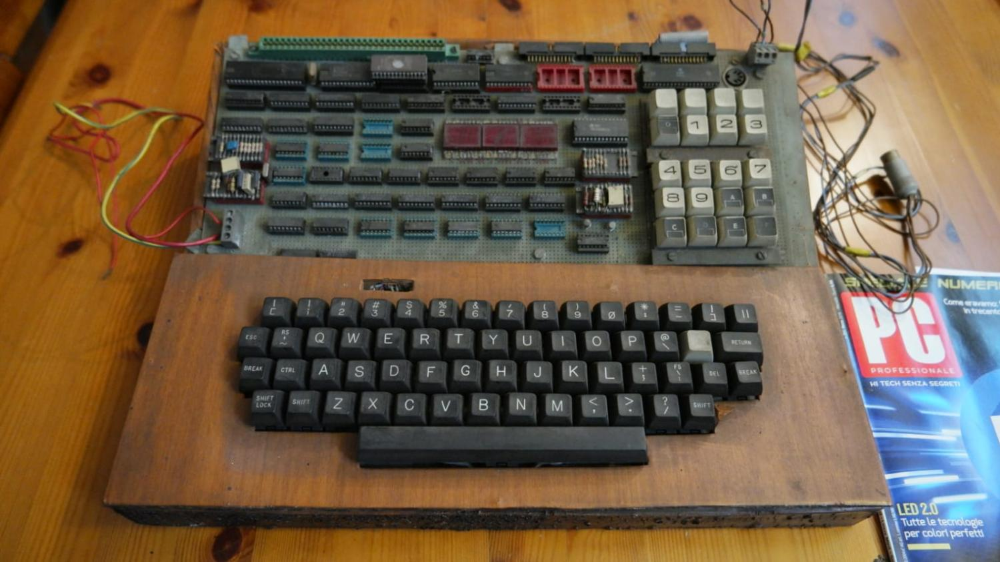
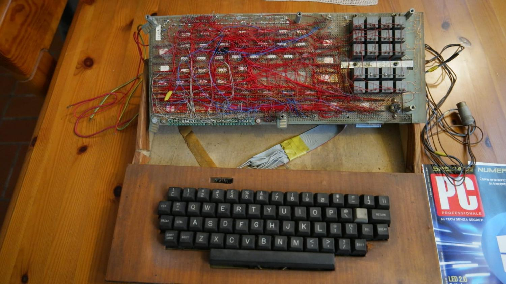

Per qualunque commento, richiesta o segnalazione scrivetemi a postmaster@lucianomanenti.com
Benvenuti su lucianomanenti.com. Questo sito è nato dalla mia passione per l'elettronica e la programmazione come modo di passare il tempo quando ho cessato il lavoro.
In queste immagini potete vedere un precursore del PC che ho sviluppato per diletto intorno al 1980, quando Steve Jobs con Steve Wozniak stava creando il suo Apple II in un garage. Chissà… magari se fossi nato nella Silicon Valley…


In realtà lo spunto mi è venuto una quindicina di anni fa da un mio vicino di casa appassionato di scala 40 che non era soddisfatto dei siti allora esistenti. Ho preso il mio sito personale che avevo usato come un sito di protesta nei confronti dell'autostrada A4 da me frequentata come pendolare (chi fosse interessato può vedere qui l'articolo sul Giornale di Brescia sulla mia iniziativa, anno 2000) e ho attaccato il gioco dello scala40 solo per lui. L'ho sviluppato in modo molto artigianale (come si vede), a manina, senza usare strumenti particolari.
Poi, trovando gusto nel fare questo, mi sono posto la sfida di sviluppare un algoritmo ben più complesso per giocare a Machiavelli. Direi che mi è venuto abbastanza bene, tanto che io stesso mi sorprendo di cosa riesca a fare il mio algoritmo.
Essendo comunque i giochi online ho riscontrato con stupore e con piacere che molti si sono appassionati a questi giochi, in particolare allo Scala 40, e alcuni di voi mi hanno anche scritto messaggi commoventi su come questi giochi li hanno aiutati in momenti difficili.
Per molti anni ho lasciato il sito a se stesso, riscontrando che mediamente venivano giocate 40.000 partite al giorno.
Di recente, a grande richiesta, ho provato a sviluppare il gioco del burraco, che non conoscevo. È una bella sfida. Rispetto al Machiavelli è molto più semplice come meccanica del gioco, ma molto più complesso come strategia, che lascia spazio anche al tocco personale del giocatore o all'affinità di coppia. Il primo abbozzo è riuscito anche meglio di come mi aspettassi, ma mi rendo conto che c'è ampio spazio per il miglioramento. Mi farebbe piacere se giocatori esperti mi spiegassero errori di strategia che dovessero riscontrare nel mio gioco. Un mio particolare ringraziamento a chi ha già cominciato a farlo. Ad oggi (Giugno 2026) siamo già a circa 4000 partite al giorno (rispetto alle 40000 di scala 40), ma si vede il potenziale di crescita.
Ho poi introdotto il solitario Klondike, dato che era semplicissimo rispetto al burraco, e ha comunque raggiunto le sue 1000 partite al giorno.
Ho infine aggiunto il gin rummy (variante del ramino), giusto per cercare di interessare qualche giocatore di lingua inglese. È un gioco che non conosco implementato in modo davvero basilare. Anche qui se qualche giocatore esperto mi vuole dare qualche dritta mi farà piacere.
Ultimamente mi sono posto il dubbio se non valesse la pena di sfruttare il potenziale del sito per guadagnare qualche soldo. Non per me, che non ne sento il bisogno, ma per mia figlia trentenne che in questi mesi ha deciso di andare a vivere da sola.
Mi sono detto perché no, in fondo c'erano degli spazi inutilizzati ai lati del campo di gioco che potevano essere sfruttati. Sembravano una risorsa gettata alle ortiche. Prima di farlo, però, ho voluto chiedere il vostro parere. Se ricordate, per alcune settimane avevo utilizzato gli spazi laterali per comunicarvi la mia intenzione di introdurre della pubblicità, chiedendovi di scrivermi per esprimere la vostra opinione.
Ho ricevuto una cinquantina di risposte. Quasi tutte per ringraziarmi per il sito, esprimendo il parere che per mantenere il sito gratuito un po' di pubblicità era accettabile. Solo un paio dicevano nettamente “basta pubblicità!”.
A questo punto ho provato a introdurla. Mi sono posto alcuni limiti:
Si trovano in rete vari suggerimenti per monetizzare il sito chiedendo contributi ai giocatori, ad esempio con Buy Me a Coffee, oppure offrendo contenuti premium a pagamento. Ma non voglio chiedere soldi ai miei giocatori.
Sto facendo una prova, anche se al momento è piuttosto deludente. I pochi euro che sto guadagnando non basterebbero neanche per pagare le spese dell'apertura della partita IVA per mia figlia, che sarebbe indispensabile per un reddito continuativo.
Se continua così tolgo la pubblicità e riporto il sito come prima. Io mi diverto lo stesso, e mi piace molto quando voi mi scrivete, per comunicarmi i vostri pareri, per segnalarmi dei problemi o qualunque altra cosa (un saluto a quel giocatore che continua a darmi del cretino… 😅).
Fatemi anche sapere se c'è qualche altro gioco che vi piacerebbe trovare sul mio sito.
In ogni caso, se qualcuno è proprio tanto infastidito dalla pubblicità, mi scriva e gli insegnerò un trucco per toglierla dal mio sito. Non voglio perdere amici solo per questo.
Vi invito a continuare a scrivermi a: postmaster@lucianomanenti.com. Mi fa piacere, io rispondo a tutti.
Ho iniziato con le pubblicità di Google. È stato decisamente più complicato di quanto pensassi.
Per prima cosa serve una approvazione iniziale del sito. Google pretende che il sito abbia dei contenuti originali che possano attrarre pubblico, ma giudica questo solo in base al testo esistente nel sito. Essendo il mio sito essenzialmente basato sui giochi, quindi su un programma che li gestisce, non contiene molto testo, come invece conterrebbe un blog. Quindi per farlo approvare ho dovuto aggiungere pagine descrittive come, ad esempio, le varie pagine di aiuto, che precedentemente erano all'interno del codice e invisibili per Google.
Ottenuta, dopo qualche tentativo, l'approvazione del sito, ho avuto una sequenza di altri problemi, tutti legati al fatto che Google riteneva in qualche modo anomali i click dei miei banner e quindi ne limitava la pubblicazione per qualche giorno. Poi ne ha limitato totalmente la pubblicazione per un mese, per problemi con i click. E senza dare spiegazioni di dettaglio perché, dicono, chi vuole truffare potrebbe sfruttare le spiegazioni per aggirare i controlli. Peccato che anche chi come me non vuole truffare non ha appigli per capire quale sia il problema.
La prima volta ho pensato di essere stato io. Ho cliccato massimo 3 o 4 volte sugli annunci (e Google vieta tassativamente di cliccare sui propri annunci), ma non sull'annuncio vero e proprio, bensì sul triangolino che compare sull'annuncio, perché volevo indagare sulla provenienza. Comunque ho aspettato il mese (non si può fare altro) e poi mi sono guardato bene dal cliccare sugli annunci; ho anche aggiunto un blocco software che mi impedisse di farlo accidentalmente.
Dopo il mese è ricominciata la pubblicazione, poi è intervenuto il limite sulla pubblicazione e poi ancora il blocco totale per un altro mese, per “click multipli”. Sembra che, se qualcuno clicca troppe volte sugli annunci, Google ritenga che sia un mio amico che lo fa per avvantaggiarmi. Solo che senza ulteriori indizi è davvero difficile capire come è effettivamente la situazione. A questo punto se io avessi un concorrente o un nemico (ma non saprei chi...) che per dispetto clicca troppe volte (quante? Boh) la mia pubblicità sarebbe completamente bloccata.
A questo punto ho messo un controllo software per fare in modo che se qualcuno clicca su un annuncio Google, per un giorno non gliene vengono mostrati altri (sostituiti da altri annunci per evitare che qualcuno, scoperto il meccanismo, lo faccia apposta per togliere la pubblicità). Tra l'altro ho dovuto implementare questa soluzione con un trucco perché Google non ti permette di sapere quando qualcuno clicca sulla sua pubblicità.
È passato il secondo mese e per ora non ho ulteriori blocchi, ma la resa è veramente bassa, pochi euro al giorno. Come dicevo, se va avanti così non mi paga le spese della partita IVA.
Comunque è stato interessante vedere il meccanismo delle aste in tempo reale che vengono fatte tra le varie agenzie pubblicitarie gestite da Google per ogni singolo annuncio. Un meccanismo pazzesco che non mi sarei mai immaginato. Vi risparmio tutte le questioni relative alla privacy e al GDPR, perché annoiano anche me.
Sono diventato un affiliato Amazon come alternativa quando Google mi ha sospeso la pubblicità.
Amazon funziona in un altro modo, e sembra più orientata agli influencer che a un sito come il mio. All'inizio serve comunque una approvazione, ma per averla bisogna registrarsi e vendere almeno tre prodotti. Dopo la vendita dei tre prodotti si viene verificati per l'eventuale approvazione. Il problema è che inizialmente, per chi non è ancora approvato, viene solo data la possibilità di avere un “link affiliato” per i vari prodotti da introdurre nel proprio sito. Questo può andare bene per un influencer che promuove un prodotto specifico e poi mette il link a quel prodotto, ma non per il mio sito dove devo mettere delle pubblicità con immagini e descrizioni. Oltretutto è vietatissimo mettere i prezzi, perché i prezzi devono essere costantemente aggiornati, e per fare questo serve un software a cui viene dato l'accesso solo dopo aver venduto 10 prodotti. Quindi mi sono dovuto costruire io dei banner pubblicitari prendendo immagini e descrizioni dal sito Amazon e aggiungendo il link affiliato. Un lavoraccio.
Sono comunque riuscito ad avere l'approvazione solo al terzo tentativo, poi ho raggiunto i 10 prodotti, ho avuto accesso al software e adesso i banner Amazon sono generati in maniera semiautomatica e i prezzi sono aggiornati automaticamente.
Al momento a sinistra del gioco sono pubblicate le pubblicità Google (sostituite da Amazon dopo il primo click) e a destra le pubblicità Amazon.
Guadagno una percentuale tra l'1% e il 5% sui prodotti venduti, non solo quelli reclamizzati ma anche su altri eventualmente acquistati dopo essere entrati in Amazon dal mio sito. Ma attualmente, in un mesetto, ho guadagnato circa 30 euro. I banner Amazon vengono cliccati tra le 50 e le 100 volte al giorno, ma gli acquisti tipicamente sono 0, qualche giorno 1 o 2. Insomma decisamente deludente.
Ho provato ad aggiungere una pubblicità Amazon anche sulla schermata finale del gioco. Questo ha circa raddoppiato i click, probabilmente perché durante il gioco si è troppo concentrati sul gioco stesso per interessarsi delle pubblicità, mentre alla fine c'è un momento di distacco in cui ci si può distrarre per la pubblicità, ma i risultati sono quelli che ho detto.
Ho ricevuto anche una proposta da una agenzia pubblicitaria per delle pubblicità da presentare una volta al giorno come popup per siti di giochi d'azzardo e scommesse online, ma non ho accettato. Mi è stato assicurato che è tutto perfettamente legale, ma non voglio fare soldi portando gente alla rovina.
Credevo di avere ottimi numeri per la pubblicità. Sembra che 40.000 pagine al giorno con le pubblicità visibili mediamente per due minuti dovrebbero essere dei valori straordinari per un sito. Ma evidentemente la concentrazione sul gioco toglie appeal alla pubblicità. Anche se mi sembra strano, perché come esperienza personale non è che su altri siti io presti attenzione più di tanto a pubblicità che certamente sono meno persistenti delle mie...
È anche vero che la valutazione delle pubblicità italiane è di gran lunga inferiore a quelle dei siti anglosassoni, ma non pensavo così tanto.
È stata una esperienza interessante, ho imparato un po' di cose, ma se le cifre non cambiano terminerà tra poco, e tornerò al sito tradizionale. Adesso sto lavorando per aggiungere una sezione di apprendimento musicale e ear training. Giusto per continuare il divertimento.
Scrivetemi a: postmaster@lucianomanenti.com
© 2026 Luciano Manenti